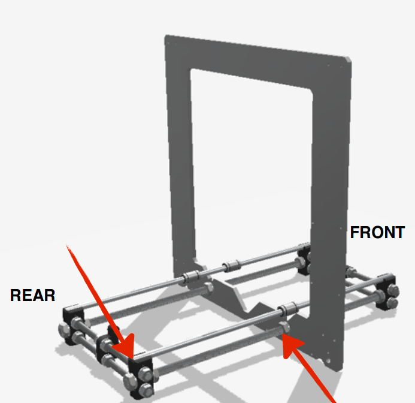
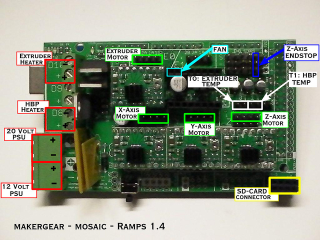
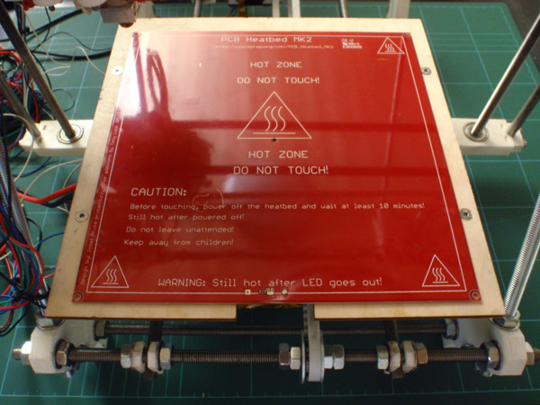
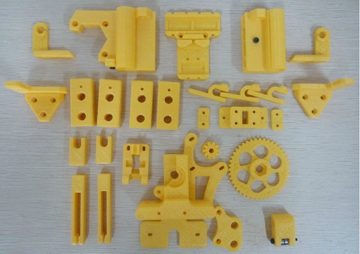
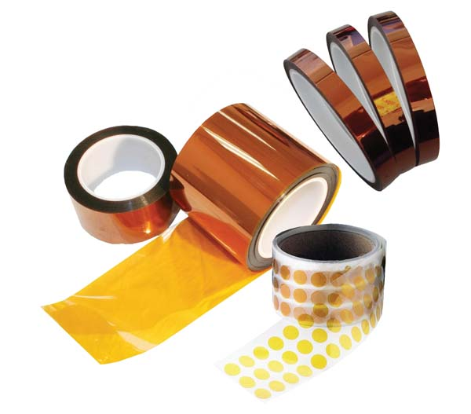
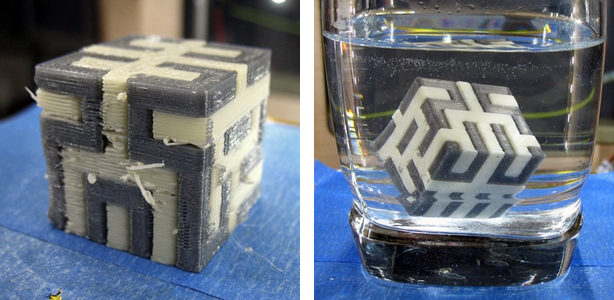
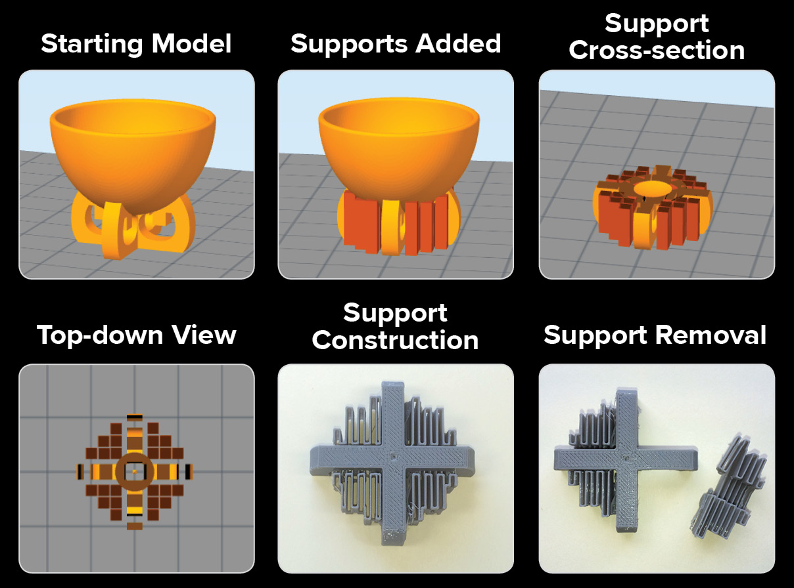
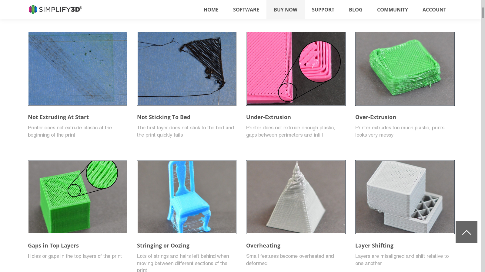
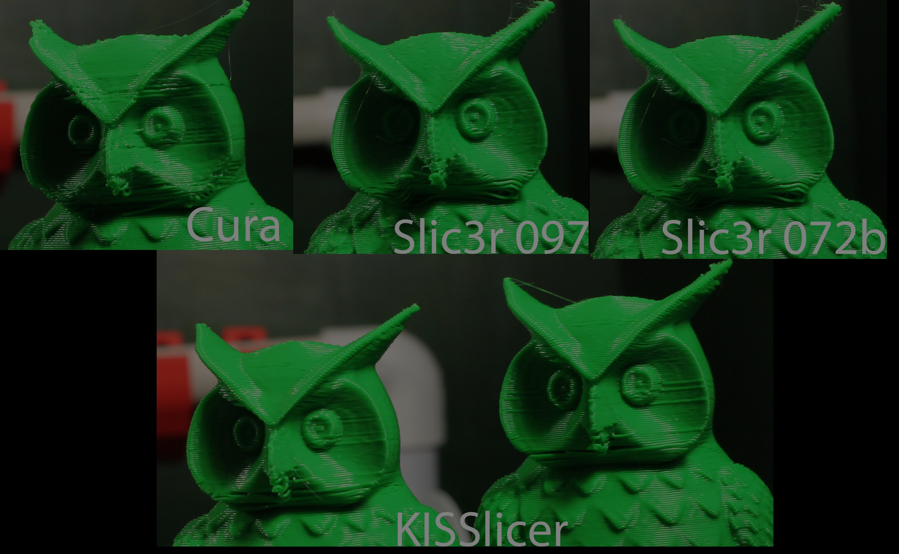

<!doctype html>
<html lang="en">

  <head>
    <meta charset="utf-8">

    <title>3D Printing Workshop 2015 - Politecnico Open unix Labs</title>

    <meta name="description" content="An introduction to 3D Printers by POuL">
    <meta name="author" content="Fabrizio Ferrai">
    <meta name="author" content="Federico Amedeo Izzo">

    <meta name="apple-mobile-web-app-capable" content="yes" />
    <meta name="apple-mobile-web-app-status-bar-style" content="black-translucent" />

    <meta name="viewport" content="width=device-width, initial-scale=1.0, maximum-scale=1.0, user-scalable=no, minimal-ui">

    <link rel="stylesheet" href="../reveal.js/css/reveal.css">
    <link rel="stylesheet" href="../reveal.js/css/theme/night.css" id="theme">
    <link href='https://fonts.googleapis.com/css?family=Montserrat' rel='stylesheet' type='text/css'>

    <!-- Printing and PDF exports -->
    <script>
      var link = document.createElement( 'link' );
      link.rel = 'stylesheet';
      link.type = 'text/css';
      link.href = window.location.search.match( /print-pdf/gi ) ? '../reveal.js/css/print/pdf.css' : '../reveal.js/css/print/paper.css';
      document.getElementsByTagName( 'head' )[0].appendChild( link );
    </script>

    <!--[if lt IE 9]>
    <script src="../reveal.js/lib/js/html5shiv.js"></script>
    <![endif]-->

    <!-- For syntax highlighting -->
	<link rel="stylesheet" href="../reveal.js/highlight.js/src/styles/solarized-light.css" id="highlight-theme">
  </head>

  <style type="text/css">
  .reveal pre code {
    color: #3f3f3f;
    background: #eee none repeat scroll 0% 0%;
    font-size: 1.5em;
    line-height: 1.4em;
    border-radius: .2em;
  }
  </style>

  <body>
    <div class="reveal">
      <!-- Any section element inside of this container is displayed as a slide -->
      <div class="slides">
        <!-- Slides are separated by newline + three dashes + newline, vertical slides identical but two dashes -->
			<section data-markdown data-separator="^\n---\n$"
			         data-separator-vertical="^\n--\n$">
				<script type="text/template">


<!-- .slide: data-background="#fdfddf" -->


---

<!-- .slide: data-background="#333333" -->

<div style="float:left; width:50%">


<h3> Fabrizio Ferrai</h3>
<h4> [@fabferrai](https://twitter.com/fabferrai) </h4>
<h4> [ferrai.io](http://ferrai.io) </h4>
<h4> [github.com/ff-](http://github.com/ff-)</h4>
<h4> [fabrizio@ferrai.io](mailto:fabrizio@ferrai.io) </h4>
</div>

<div style="float:left; width:50%">


<h3> Federico Izzo</h3>
<h4> [@Coderfie](https://twitter.com/Coderfie) </h4>
<h4> [izzo.ovh](http://izzo.ovh) </h4>
<h4> [github.com/Nimayer](https://github.com/Nimayer)</h4>
<h4> [federico.izzo42@gmail.com](mailto:federico.izzo42@gmail.com) </h4>
</div>

---

## [slides.ferrai.io/3d-printing](https://slides.ferrai.io/3d-printing/)

---

# Index

- Why 3D Printing
- What
- Some history
- Open Source Printing: Hardware
- How to build one
- Materials
- Open Source Printing: Software
- Model 2 Object
- Control Software
- Finding Models on The Internet
- Some 3D Editors

---


---

# Intro: why?

--

# Why 3D Printers

--

## Freedom

Of imagination, tinkering, design and construction


--

## Simplicity

No assembly (usually), little knowledge required


--

## Saving

No waste of material and precise production (addictive!)


### <!-- .element: class="fragment" --> *Every* shape is possible*

---

# WAIT, WHY?

--

## Prototyping

Architecture, Design, Mechanical parts

<!-- .slide: data-background="img/print.gif" -->

--

## Mechanical parts production

<!-- .slide: data-background="img/3ddrone.gif" -->

--

## Biomedics

<!-- .slide: data-background="img/3dbio.jpg" -->

--

## Fashion?

<!-- .slide: data-background="img/3ddress.gif" -->

--

## Food?

<!-- .slide: data-background="img/3dfood.gif" -->

---

# Some history

--

## The Beginnings

- *Additive manufactoring* invented in the 80s
- 1984: Stereolitography <!-- .element: class="fragment" -->
- STL: STereoLitography file format <!-- .element: class="fragment" -->
- <!-- .element: class="fragment" --> `3D Printing`: because they started with inkjet print heads
- 1990s: new methods for metals AM <!-- .element: class="fragment" -->
- 2010s: <!-- .element: class="fragment" --> *3D Printing* becomes the umbrella term

--

## Types

1. Extrusion
2. Photopolymerization
3. Powder bed
4. Lamination
5. Metal wire process

--

### 1. Extrusion

- *Fused deposition modeling (FDM)*: developed by Scott Crump at the end of the 80s, commercialized in 1990 by Stratasys
- As the patent expired, open-source community built an ecosystem around this technique, costs plummeted
- *How it works*: a thermoplastic or metallic filament is melt by an hig-temperature nozzle, and it is extruded in a flow that hardens immediately, laid down in levels


--

### 2. Photopolymerization

- *How it works*: a vat of liquid polymer is exposed to controlled lighting under safelight conditions - the exposed liquid polymer hardens.


--

### 3. Powder bed

- *How it works*: some powder is melt (tipically by a laser), and used to build the model level by level

A nice collateral effect is that unused powder provides support to the printed part.


--

### 4. Lamination

- *How it works*: layers of adhesive-coated paper, plastic, or metal laminates are successively glued together and cut to shape with a knife or laser cutter.


--

### 5. Metal wire process

- *How it works*: ...Metal powder or wire is welded together using a laser as the heat source.
- <!-- .element: class="fragment" --> __Pro version:__ electron beam!


--


<!-- .slide: data-background="img/catfall1.gif" -->

---

# Open Source Printing
## Hardware

--

## Some parallel history

- The RepRap project started as an initiative to develop a 3D printer that can *print most of its components*, being *open-hardware* and *low-cost*
- RepRap was founded in 2005 by Dr Adrian Bowyer, a Senior Lecturer in Mechanical Engineering at the University of Bath (UK) <!-- .element: class="fragment" -->

--

## [RepRap.org](http://reprap.org)

- Arduino-based electronics
- Low cost printing of thermoplastic materials (ABS, PLA, Nylon)


--

## The present

- 3D Printers have conquered the media attention
- Several companies, using the RepRap lessons as a starting point, developed commercial products: Ultimaker, MakerBot <!-- .element: class="fragment" -->
- <!-- .element: class="fragment" --> [Ultimaker good, MakerBot bad](https://www.reddit.com/r/technology/comments/26cqtl/makerbot_blatantly_steals_and_patents_a_community/)

--

## The future:

- <!-- .element: class="fragment" --> [**Fabtotum**](http://www.fabtotum.com/)
- Other materials? <!-- .element: class="fragment" -->
- ...Sustainable development in the developing world? <!-- .element: class="fragment" -->


---


---

# How to Basic

<!-- .slide: data-background="img/howtobasic.jpeg" -->

## Building a RepRap

--

## First, [get a guide](http://reprap.org/wiki/Prusa_i3_Build_Manual)

--

<!-- .slide: data-background="img/muffins.jpeg" -->
## Building a RepRap: recipe

- Mechanical hardware: belts, rods, etc. <!-- .element: class="fragment" -->
- Electronics: Arduino + Motors Driver <!-- .element: class="fragment" -->
- Power: an old PC power supply is OK <!-- .element: class="fragment" -->
- Stepper motors <!-- .element: class="fragment" -->
- Heated bed (+ glass) <!-- .element: class="fragment" -->
- 3D Printed parts <!-- .element: class="fragment" -->
- Extruder: hot end <!-- .element: class="fragment" -->
- Kapton Tape <!-- .element: class="fragment" -->

--

## Ol'good'rods



--

## Electronics

A huge list is here: [reprap.org/wiki/Electronics](http://reprap.org/wiki/Electronics)

### RAMPS 1.4



--

## Stepper motors

#### Why steppers?
[TL;DR: Stepper motors are designed to maximize holding torque, the stepper's ability to hold the mechanical load at one of the steps, at the price of having less speed.](http://electronics.stackexchange.com/questions/79498/difference-between-brushless-motor-and-stepper-motor)


--

<!-- .slide: data-background="img/catfall3.gif" -->

--

## Heated bed

#### Why: to keep the print sticking and prevent shrinkage



--

## 3D Printed parts



--

## Extruder


--

## Kapton Tape

Provides electrical insulation, radiation protection: used in aircraft, spacecrafts and cryogenics



---

# Materials

--

<!-- .slide: data-background="img/mais.jpg" -->

## PLA

- *What's that*: a **bio-degradable** polymer that can be produced from lactic acid, which can be fermented from crops such as maize.
- <!-- .element: class="fragment" --> *Characteristics*: harder than ABS, melts between 180°C and 220°C, but it exhibits more friction, which can make it more susceptible to extruder jams.

--

## PLA: Printing

- Ideal material for RepRaps: dimensionally stable, no heated bed required, **cheap**.
- In general "easy" to print: low temps, little pressure necessary <!-- .element: class="fragment" -->
- How: sticks well to the bed; you can print it directly on glass, better on Kapton Tape (add glue stick if necessary) <!-- .element: class="fragment" -->

--

## ABS

- *What's that*: Acrylonitrile Butadiene Styrene (ABS), a common thermoplastic, light and easy to use (both molded and extruded).
- <!-- .element: class="fragment" --> *Characteristics*: better mechanical properties than other thermoplastics, less brittle than PLA, handles higher temperatures better.

--

<!-- .slide: data-background="img/warp.jpg" -->

## ABS: Printing

- Awesome because easy to buy, requires less extrusion strenght than PLA, performs better on small objects
- Downsides: <!-- .element: class="fragment" --> printed at higher temperatures (200-250°C, sweet spot at 230°C), creates potentially toxic fumes: **don't breathe them and print in a well-ventilated area**
- Printing <!-- .element: class="fragment" --> problems: it tends to **WARP CATASTROPHICALLY** on big parts
- How <!-- .element: class="fragment" --> to print: prepare some *ABS juice* (ABS + pure acetone), and spray on the bed before printing, do not remove printed parts from bed before they have cooled down.

--

<!-- .slide: data-background="img/catfall4.gif" -->

--

## Nylon

- *What's that*: a polyamide, which is a polymer containing monomers of amides joined by peptide bonds
- <!-- .element: class="fragment" --> In practice, **nylon**
- <!-- .element: class="fragment" --> Extremely strong. Like ABS, print in a **well-ventilated area**

--

## Nylon: Printing

#### Advantages
1. Cheap and common
2. Printed parts are flexible and durable
3. stronger material than ABS/PLA

<br>
#### Disadvantages
1. More stringy
2. Warps __EVEN MORE THAN ABS__
3. More cleaning is necessary
4. You should dry it before printing

--

## Other materials

- Wanna experiment? [Take this list.](http://reprap.org/wiki/Printing_materials)
- [Support material](http://reprap.org/wiki/Support_Material)



---


<!-- .slide: data-background="#fff" -->

---


<!-- .slide: data-background="#fff" -->

---

# Open Source Printing
## Software

---

# Model 2 Object
<!-- .slide: data-background="img/drawing-hands.jpg" -->

--

## The computer side:
<!-- .slide: data-background="#fff", style="color: #000000" -->

<style>
#the-computer-side- {
  color: #000
}
</style>

--

## The workflow
### Formats

- __Generic 3D Model__
     Mesh repair: Check for errors on the surface <!-- .element: class="fragment" -->
- __STL__: Simple 3D format, suitable for 3D printing
     Slicing: split the model to slices and decide how to print each slice <!-- .element: class="fragment" -->
- __GCode__: File containing the sequence of commands for the printer
     Host Software: Sends the commands to the printer <!-- .element: class="fragment" -->


--

## Mesh repair
### es: NetFabb
<br></br>
- Checks the __surface__ for __errors__ in the mesh,
- If the model would have been (hipothetically) put under water,
no water would have spilled inside it.
<!-- .slide: data-background="img/meshfix.jpg" -->

--

## Slicing

- Slices the model into levels
- Decides how to realize every level
<br><br>
#### You can set parameters like:

--

## Infill:
#### Solid models are made hollow, such that:

- __less material__ is used for the print
- The print is __faster__
- The final object __weights less__
- It is possible to choose __shape__ and __percentage__ of the infill

<!-- .slide: data-background="img/infill.jpg" -->

--

## Support Structures

- Are thin, break-away structures
- They make printing __unsupported areas__ possible.
- Generally necssary when printing surfaces at angles > 45°

<!-- .slide: data-background="#000" -->


--

## Other parameters:

To tweak when __troubleshooting__



- __Layer Width__: thinner = more detailed, slow print
- __Extruder Temperature__: Approx 180°C for PLA and 220 °C for ABS
- __Print/Movement Speed__: Sometimes slowing down the speed can give better results.
- etc...

--

## Slicing Software

Each software gives different results

- __Ultimaker Cura__
- __Slic3r__
- __Kissengine__

<!-- .slide: data-background="#000" -->


---


---

## The printer side:
<!-- .slide: data-background="#fff", style="color: #000000" -->

<style>
#the-printer-side- {
  color: #000
}
</style>

--

## Firmware

The control board is usually an Arduino. It translates the printing instructions in phisical movements.

Of course it needs software to do that; so here's a <!-- .element: class="fragment" --> list: [reprap.org/wiki/Firmware](http://reprap.org/wiki/Firmware)

Special <!-- .element: class="fragment" --> mention: [Marlin](http://reprap.org/wiki/Firmware#Marlin)


--

<!-- .slide: data-background="img/catfall6.gif" -->

--

# Control Software
## How to manage the 3D printer
<!-- .slide: data-background="img/prusa_rasp.jpg" -->

--

- Print over __USB__


- Print over __Network__

<!-- .slide: data-background="#fff", style="color: #000000" -->

<style>
#print-over-network, #print-over-usb {
  color: #000
}
</style>

--

## Printrun / Pronterface

<!-- .slide: data-background="img/pronterface.png" -->

*Suite containing Printcore, Pronsole and Pronterface*

- Most used control software
- Simple interface
- Integrates Slic3r
- Completely Open Source

--

## Repetier Host

<!-- .slide: data-background="img/repetier.jpg" -->

- More recent that Printrun
- Comes with its own firmware
- More integrated approach
- Comes with slic3r
- Entirely Open Source

--


The software runs on Raspberry Pi connected to the printer
You send the jobs and control the printer via a web interface

- Less powerful that the other two
- Integrates Cura as slicer
- No need to have specific software installed on the computer
- Also, Open Source

---

# Finding models
## On the internet

--

## Some places

- <!-- .element: class="fragment" -->[__Thingiverse__](https://www.thingiverse.com/): Backed by MakerBot Industries
- <!-- .element: class="fragment" -->[__YouMagine__](https://www.youmagine.com/): Run my Ultimaker
- <!-- .element: class="fragment" -->[__Grabcad__](https://grabcad.com/): Meant for CAD model sharing, free community library
- <!-- .element: class="fragment" -->[__Shapeways__](http://www.shapeways.com/): shop of 3D printed objects, files often available
- <!-- .element: class="fragment" -->[__Cults 3D__](https://cults3d.com/): Marketplace with a lot of free objects
- <!-- .element: class="fragment" -->[__Sketchfab__](https://sketchfab.com/): Has an online preview

--

<!-- .slide: data-background="img/catfall7.gif" -->

---

# 3D Editors

--

## Tinkercad

HTML5 based editor (only a browser needed)

__Simple approach__ to modeling:
- Start from basic shapes
- Every shape can be a solid or a hole
- You can group shapes to make new ones
- Every shape can be scaled or cloned
__Limited to 1mm__ precision

<!-- .slide: data-background="img/tinkercad.jpg" -->

--

## Openscad

<br>


---

<!-- .slide: data-background="#00aa00" -->


---

# Thank you!


These slides are licensed under Creative Commons<br>
Attribution-ShareAlike 3.0 Unported

## [POUL.ORG](https://www.poul.org)


          </script>
        </section>
      </div>

    </div>

    <script src="../reveal.js/lib/js/head.min.js"></script>
    <script src="../reveal.js/js/reveal.js"></script>

    <script>

    // Full list of configuration options available at:
    // https://github.com/hakimel/reveal.js#configuration
    Reveal.initialize({
      controls: true,
      progress: true,
      history: true,
      center: true,

      transition: 'slide', // none/fade/slide/convex/concave/zoom

      // Optional reveal.js plugins
      dependencies: [
        { src: '../reveal.js/lib/js/classList.js', condition: function() { return !document.body.classList; } },
        { src: '../reveal.js/plugin/markdown/marked.js', condition: function() { return !!document.querySelector( '[data-markdown]' ); } },
        { src: '../reveal.js/plugin/markdown/markdown.js', condition: function() { return !!document.querySelector( '[data-markdown]' ); } },
        { src: '../reveal.js/plugin/highlight/highlight.js', async: true, callback: function() { hljs.initHighlightingOnLoad(); } },
        { src: '../reveal.js/plugin/zoom-js/zoom.js', async: true },
        { src: '../reveal.js/plugin/notes/notes.js', async: true }
      ]
    });

  </script>

  </body>
</html>
